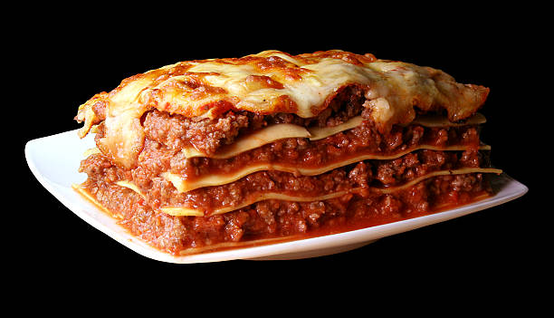

Recetas de lasagna casera

Asi se verá tu lasagna casera
Se hará de manera sencillas y con cosas que tenemos en la casa.
Tambien se requerira de un horno para el gratinado final, espero
que esta receta te guste totalmente, se puede compartir con algun familiar
y hasta cocinar en una ocasion especial.
Ingredientes:
- Carne Molida
- Especias
- Pasta para preparar lasagna
- Salsa
- Aceite
- Queso Parmesano
- Mantequilla
Pasos:
- Se agrega mantequilla en una caserola
- Se agregan las especias a la caserola
- Se agrega aceite en otra caserola
- Se agrega la carne y la salsa en la caserola con aceite
- En un refractario se agregan capas de pasta con la carne y las especias
- Se mete al horno a 180° celsius por 30 minutos